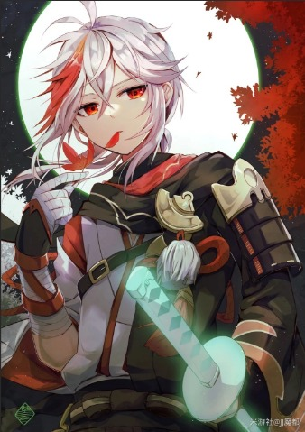
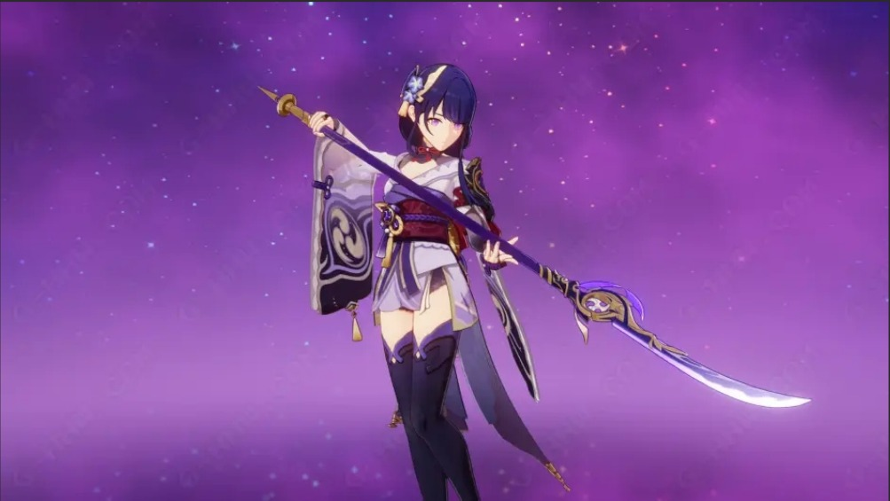
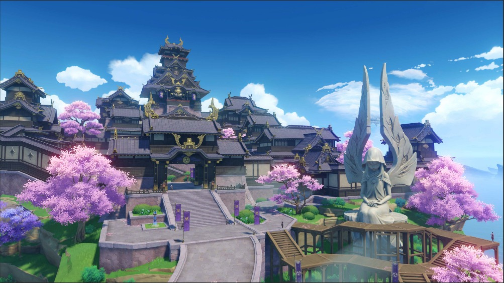

“旅行者，我给你讲个故事吧。”万叶说，没等我同意，他就自顾自地讲了起来。
 枫原万叶“他曾是我的挚友，那天他向我问起，可曾听说过‘无想的一刀’？我说，自然，那一刀只有‘神罚’降临时才可得见，是雷电将军武艺的极致，是最强的象征！可他说，‘那一刀，并非不可企及！总有地上的生灵，敢于直面雷霆的威光！’
 雷电将军“后来，‘眼狩令’不期而至，民众的愿望沦为砌筑‘永恒’的砖瓦。在我无奈四处流离之时，却听闻他向‘眼狩令’的执行者发起了‘御前决斗’。‘御前决斗’庄重而又残酷：败者迎接神罚，胜者则赢取转机。或许他在想，他是最适合站出来的人，直面那‘无想的一刀’。  天守阁
“可当我抵达‘天守阁’时，决斗已然结束。只听到神罚之后，他的断刀落地的声响。
“在最后一刻，他的脸上会是怎样的神情？来不及多想，我上前夺走了他那颗光芒暗淡的神之眼，随后逃离。我只知道，不能让他那炽热的愿望被砌进冰冷的神像里。”
“万叶···”听了他说的故事，我不知说什么好。仰望星空，繁星点点，也许其中的一颗，就是万叶的友人吧。